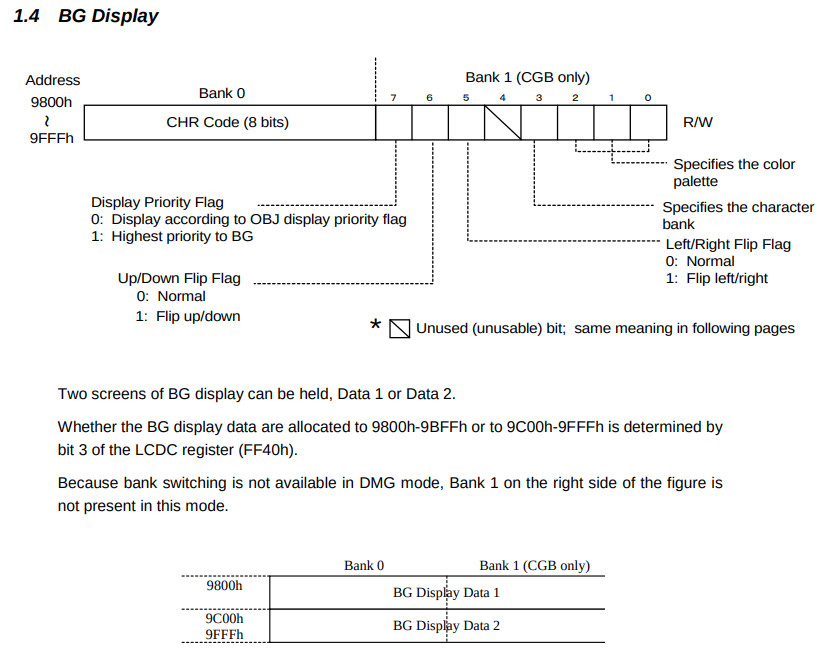
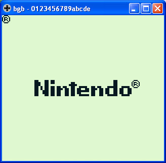

參考資訊：
https://bgb.bircd.org/
https://github.com/gbdev/rgbds
https://github.com/sinamas/gambatte
https://github.com/lancekindle/DMGreport
BG的內容就是第X個CHR

section "vblank", rom0[$0040]
reti
section "lcdc", rom0[$0048]
reti
section "timer", rom0[$0050]
reti
section "serial", rom0[$0058]
reti
section "joypad", rom0[$0060]
reti
section "entry", rom0[$0100]
nop
jp _start
section "header", rom0[$0104]
db $ce, $ed, $66, $66, $cc, $0d, $00, $0b, $03, $73, $00, $83, $00, $0c, $00, $0d
db $00, $08, $11, $1f, $88, $89, $00, $0e, $dc, $cc, $6e, $e6, $dd, $dd, $d9, $99
db $bb, $bb, $67, $63, $6e, $0e, $ec, $cc, $dd, $dc, $99, $9f, $bb, $b9, $33, $3e
db "0123456789abcde"
db 0
db 0, 0
db 0
db 0
db 0
db 0
db 1
db $33
db 0
db 0
dw 0
_start:
ld hl, $9800
ld [hl], $19
jp @
完成
